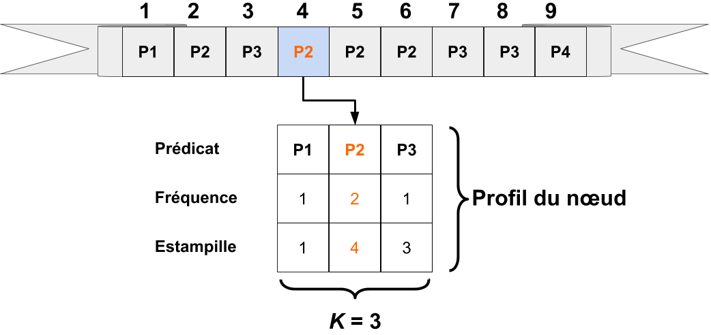
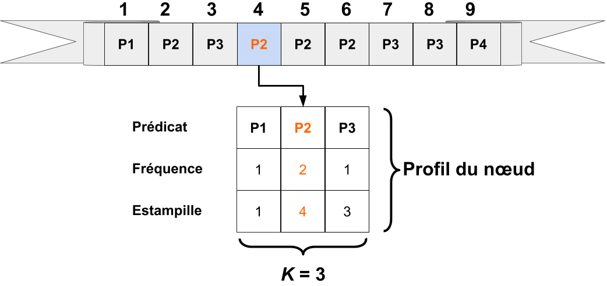

Collaboration dans une fédération de
consommateurs de données liées
Pauline Folz
Thèse de doctorat soutenu le
12 octobre 2017
Jury
| Rapporteurs : | Catherine Faron Zucker, Maître de conférences, Sophia Antipolis |
| Esther Pacitti, Professeur, Université de Montpellier | |
| Examinateur : | Hubert Naacke, Maître de conférences, Université Paris 6 |
| Marc Gelgon, Professeur, Université de Nantes | |
| Membre invité : | Hervé Jaigu, Chargé de missions innovation, Nantes Métropole |
| Directeur : | Pascal Molli, Professeur, Université de Nantes |
| Co-encadrante : | Hala Skaf-Molli, Maître de conférences, Universté de Nantes |


Introduction ❱ Linked Open Data cloud

Introduction ❱ Indexes centralisés

|
Parcours (crawler) du Web des données
Recherche par mots clés
Sites Web proposant un index centralisé : Sindice[1], Swoogle[2], Waston[3] ou Laundromat[4]
[2] http://swoogle.umbc.edu/2006/
Si les médiateurs collaborent en partageant leurs ressources en : espace disque, capacité de calcul et bande passante ; est-il possible d’obtenir un meilleur compromis entre performances et disponibilité des données ?
CyCLaDEs ❱ Contexte
Les clients TPF exécutent des requêtes SPARQL sur des serveurs TPF [1] :

- Minimise le traitement côté serveur, grâce aux fragments
- Jointures exécutées du côté clients

CyCLaDEs ❱ Contexte
Les caches jouent un rôle important dans les performances de TPF :

- Les caches contiennent des fragments
- Les fragments sont suceptibles d'être réutilisés localement ou à travers les clients
CyCLaDEs ❱ Fragment de triplets et caches
 152 Appels HTTP
152 Appels HTTP
| 0 | ?book http://www.w3.org/1999/02/22-rdf-syntaxns#type http:.../ontology/Book |
| 1 | ?book http:.../ontology/author ?author |
| 2 | http:.../resource/%22...And Ladies of the Club%22 http:.../ontology/author ?author |
| 3 | http:.../resource/%22A%22 Is for Alibi http:.../ontology/author ?author |
| 4 | http:.../resource/%22B%22 Is for Burglar http:.../ontology/author ?author |


Que se passe t'il si les clients collaborent ?
CyCLaDEs ❱ Si les clients collaborent
 Le cache local d'un client peut être partagé avec les autres :
Le cache local d'un client peut être partagé avec les autres :
- Réduit la charge du serveur
Défi :
- Réseau avec un million de clients
Comment un client peut trouver rapidement un fragment chez un autre client ?
CyCLaDEs ❱ Travaux connexes
Table de hachage distribuées (DHT) : distibue le cache à travers les participants [2] :

- Trouve le framgent s'il existe
- Une requête → 20 000 appels → 20 000 sauts log(n), n: nombre de pairs
CyCLaDEs ❱ Travaux connexes
Cache comportemental : connecte un nombre fixe de nœuds similaires [3] :

- Accès direct sans latence
- Pas de garantie de trouver le fragment
- Expérimenté avec des historiques de navigation Web
Et si on utilisait les caches comportementaux pour des historiques de requêtes ?
CyCLaDEs ❱ Approche TPF
 Beaucoup de clients accèdent au serveur TPF de manière concurrente, mais
les clients ne collaborent pas.
Beaucoup de clients accèdent au serveur TPF de manière concurrente, mais
les clients ne collaborent pas.
CyCLaDEs ❱ Approche
 Connecte les nœuds à travers un réseau d'échantillonage aléatoire
des pairs (RPS) :
Connecte les nœuds à travers un réseau d'échantillonage aléatoire
des pairs (RPS) :
- Chaque nœud maitient une vue partielle du réseau
Phases d'échange de voisins :
- renouvelle périodiquement les voisins
- gère les arrivées et départs des nœuds et les partitions réseau
Réseau implémenté par Cyclon [5]
CyCLaDEs ❱ Approche
 Le réseau RPS garantit la connectivité entre tous les clients
Le réseau RPS garantit la connectivité entre tous les clients
C6 est connecté à C3 :
- C6 → DBpedia
- C3 → DrugBank
- C6 n'est pas similaire à C3
Nécessite un second réseau superposer pour gérer la similarité comme proposé dans Gossple [6]
CyCLaDEs ❱ Comment profiler les nœuds ?

Exécuter des requêtes produit un flux de fragment, le cache est une fenêtre sur de flux
Profil = résumé du passé récent = fréquence des k derniers prédicats utilisés
CyCLaDEs ❱ Algorithme de profilage


CyCLaDEs ❱ Exemple - Algorithme de profilage

 


CyCLaDEs ❱ Exemple - Echange de voisins
Avant Après
Pour C5 : C9 est plus similaire que C8
Pour C6 : C8 est plus similaire que C9

CyCLaDEs ❱ Exécuter une requête avec CyCLaDEs


C1 exécute Q1
Pour chaque triplet, essayé de résoudre le triplet dans :
- Cache local
- Cache des voisins
- Cache HTTP
- Serveur TPF
CyCLaDEs ❱ Expériences

Jeux de données : Berlin Benchmark (BSBM) [7], choisit pour la simulation d'applications Web
Un serveur TPF avec un cache HTTP hébergeant les jeux de données BSBM
Un réseau de clients TPF-CyCLaDEs exécutant des requêtes BSBM
CyCLaDEs ❱ Paramètres d'expérimentations
Chaque client a un emsemble de 25 requêtes générées à partir de 12 modèles :
- Phases d'échange de voisins : toutes les 10 secondes
- Deux étapes :
- Initialisation
- Mesures
CyCLaDEs ❱ Est-ce que le cache distribué passe à l'échelle ?

Paramètre : BSBM 1M, cache = 1000, profil = 10, RPS(4,6,7), CON(9,15,20)
~ 20% des appels sont résolus par le cache décentralisé
CyCLaDEs ❱ Est-ce que la précision du profil impacte la définition des communautés ?


Paramètres : 2 BSBM 1M, 50 clients par jeu de données, cache = 1000
Dans le réseau superposé CON, CyCLaDEs contruit deux communautés distinctes : BSBM1 et BSBM2
Ladda ❱ Contexte

Fédération de consommateurs de données liées
Chaque consommateur de données :
- est connecté à nombre fixe de voisins choisis aléatoirement ;
- est autonome ;
- est un médiateur TPF ;
- peut partager ses ressources.
Que se passe-t'il si un consommateur de données peut partager ses capacités d'exécution de requêtes SPARQL ?
Ladda ❱ Exécution de requêtes
| Exécution seul | Exécution en collaboration |
 |
|
| Fini à T3 | Fini à T2 |
Ladda ❱ Existe-t'il des clients libres ?
Analyse des journaux de DBpedia 3.8 sur 24 heures

Beaucoup de clients exécutent peu de requêtes
Il existe des clients libres, à condition qu'ils ne quittent pas immédiatement le réseau
Ladda ❱ Limite de parallélisation
Allocation de manière optimale LPT[x]